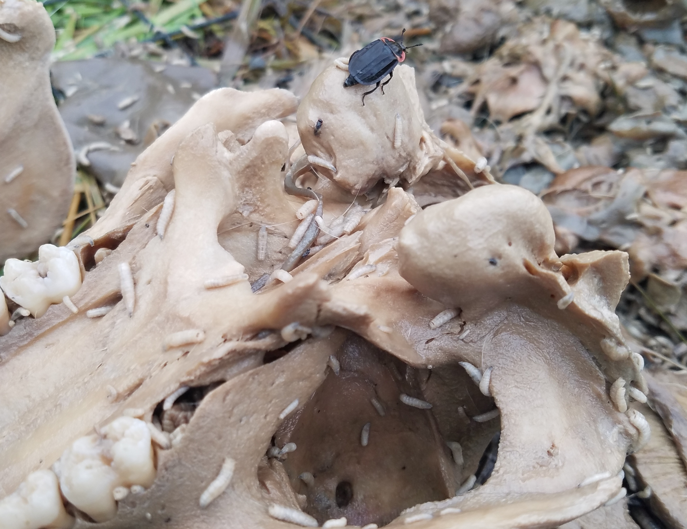

We use insects as bioindicators to answer important questions across forensic science, ecology, and wildlife conservation—from investigating time since death and other forensic questions to understanding insect biodiversity and ecosystem health in the Sonoran Desert and beyond. Welcome to FEWL.
Our Research Meet the Team
Our research explores the diverse applications of entomology, spanning forensic investigations, insect ecology, and wildlife studies.
Investigating insect development and larval morphology to help answer various questions to support criminal investigations.
Learn moreStudying how extreme heat in arid environments affects insect biodiversity, arrival, behavior and colonization dynamics on decomposing remains.
Learn moreUsing insects as bioindicators to assess ecosystem health and monitor wildlife biodiversity.
Learn moreWe are always looking for motivated undergraduate and graduate students interested in forensic entomology, wildlife forensics, or insect ecology.